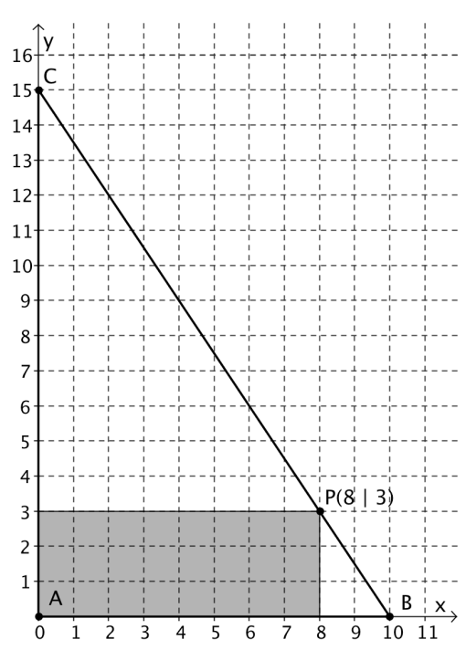

Gegeben ist das abgebildete Dreieck ABC. Jeder Punkt P der Dreiecksseite BC ist Eckpunkt eines Rechtecks, das dem Dreieck einbeschrieben ist. Die Seiten der einbeschriebenen Rechtecke sind parallel zu den Koordinatenachsen. Der Punkt A ist immer ein Eckpunkt des Rechtecks.

a) Beschreiben Sie, wie sich der Flächeninhalt des Rechtecks verändert, wenn man P auf BC von B nach C bewegt.
Diese Aufgabe wird im Unterricht besprochen.
b) Wann ist der Flächeninhalt gleich 0?
Diese Aufgabe wird im Unterricht besprochen.
c) Welche Werte kann der Flächeninhalt annehmen? Auch 100?
Diese Aufgabe wird im Unterricht besprochen.
d) Gibt es mehrere verschiedene Rechtecke, die denselben Flächeninhalt besitzen? Wenn ja, suchen Sie mehrere Beispiele dafür!
Diese Aufgabe wird im Unterricht besprochen.
e) Welcher Zusammenhang besteht zwischen den Koordinaten von P und dem Flächeninhalt des Rechtecks? Formulieren Sie eine Funktionsvorschrift für $F(x)$.